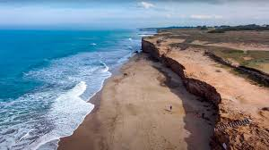

El Programa Jóvenes y Memoria es coordinado por la Comisión por la Memoria desde el año 2002. Está dirigido a escuelas y organizaciones sociales, políticas y culturales de la provincia de Buenos Aires y propone a los equipos de trabajo que elaboren un proyecto de investigación acerca de las memorias del pasado reciente o la vulneración de los derechos humanos en democracia. En noviembre se realiza el encuentro plenario del programa donde les jóvenes participan de una experiencia en la que se conocen y reconocen con otres, exponen sus trabajos, producen, debaten e intercambian ideas y proyectos.
Después de un año de trabajo los equipos se reúnen en Chapadmalal para mostrar sus producciones finales, intercambiar experiencias, conocerse, reflexionar, divertirse y seguir creando. Durante los días del encuentro, los jóvenes toman la palabra para narrar las historias no contadas de sus comunidades: historias ocultas, silenciadas por el miedo y la complicidad. Y en su esfuerzo por conocer más sobre el lugar en el que viven y pensarse a si mismos, emergen otras preocupaciones: la exclusión social, la militancia política y el compromiso social, las transformaciones económicas y sus consecuencias sobre el mundo del trabajo. Los jóvenes hacen memoria, desafían el presente e imaginan otro futuro
Chapadmalal es un momento particular, distinto. Durante esos días predomina un clima de entusiasmo, nerviosismo y adrenalina que no escapa a ninguno de los que transitan por allí. El esfuerzo propio y ajeno es valorado por todos, en las presentaciones los aplausos se suceden para dar aliento y sentirse acompañado. Chapadmalal es un lugar especial. Es posible la reflexión y el intercambio de experiencias y puntos de vista; también el entretenimiento, el encuentro con otros, y la oportunidad de hacer amigos.
Chapadmalal es una localidad del partido de General Pueyrredón, provincia de Buenos Aires, Argentina. Se ubica en la costa atlántica de la provincia de Buenos Aires, a 23 km de la ciudad de Mar del Plata.
En Chapa, todos los años, jóvenes de diferentes localidades de la provincia de Buenos Aires, dan vida a una experiencia intensa, donde las emociones y los recuerdos conviven con la alegría y la esperanza. Cada año el Complejo Turístico de Chapadmalal se convierte en un espacio donde los jóvenes se reúnen para hablar y escucharse, en un clima de compañerismo y respeto.
El primer día los chicos son invitados a participar de los talleres de integración en los cuáles la propuesta es juntarse, mezclarse y conocerse con otros compañeros. Esto es solo la antesala de unos espacios de encuentro que, con el correr de las horas, se generan naturalmente.
En el transcurso de las jornadas y en paralelo a las presentaciones, se organizan diferentes talleres y foros de discusión y reflexión donde la propuesta es pensar junto a los jóvenes cuestiones como la discriminación, la violencia de género, la participación juvenil y las prácticas no violentas de protesta entre otras.